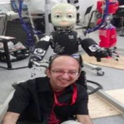
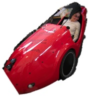

|  | Adam Barclay is a w12-Labs researcher in the area of multi-sensor perception for autonomous platforms. The integration of classic and deep learning techniques & design trade-offs are stimulating factors as he sprints towards the completion of his current PhD studies. |
|  | Alexandra Tiska is a w12-Labs member, in the area of psychomotorics as applied to the learning process of human locomotion in water sports. |